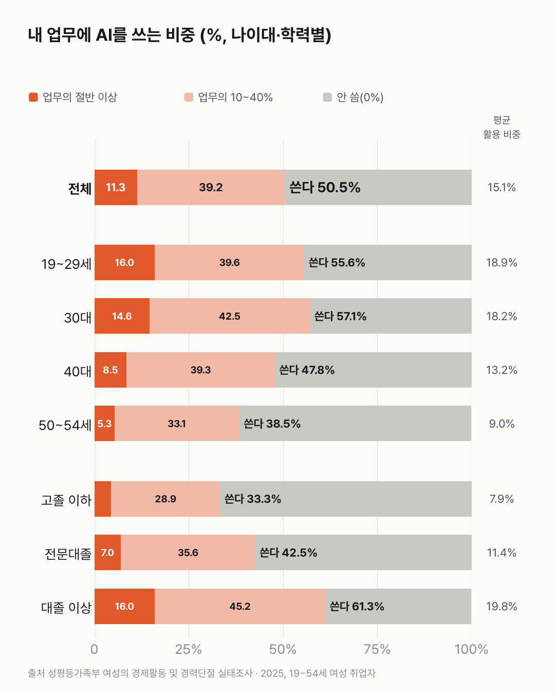
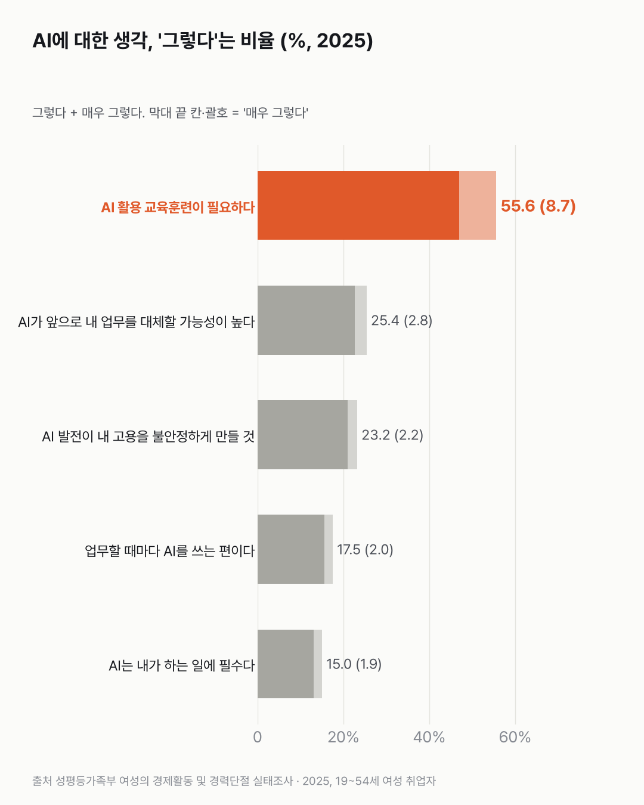

일하는 19~54세 여성, 둘 중 하나는 이미 일에 AI를 써요
일하는 19~54세 여성 절반은 벌써 일에 AI를 쓰고 있어요. 그런데 AI가 내 일에 꼭 있어야 한다는 사람은 많지 않았어요.

- 일하는 19~54세 여성의 50.5%가 업무에 AI를 써요. 일의 절반 이상을 AI로 한다는 사람은 11.3%예요.
- 30대는 57.1%가, 50~54세는 38.5%가 써요. 학력별로는 대졸 이상 61.3%, 고졸 이하 33.3%예요.
- AI가 앞으로 내 업무를 대체할 가능성이 높다고 본 사람은 25.4%, AI 활용 교육이 필요하다고 본 사람은 55.6%예요.
업무에 AI를 쓴다는 건 어느 정도를 말하는 걸까요? 이 조사는 내 일 가운데 AI로 하는 비중을 0%, 10~20%, 30~40%처럼 구간으로 고르게 했어요. 고른 값을 평균 내면 15.1%예요.
쓰는 사람은 일하는 19~54세 여성의 50.5%예요. 업무의 절반 이상을 AI로 한다는 사람도 11.3% 있어요.
평균만 봤으면 몰랐을 거예요. 쓰는 사람은 19~29세 55.6%, 30대 57.1%, 40대 47.8%, 50~54세 38.5%예요. 학력별로는 대졸 이상 61.3%, 전문대졸 42.5%, 고졸 이하 33.3%예요. 다만 여기엔 하는 일(직종)이 다른 영향이 섞여 있어요.
어떤 도움이 될까요? AI를 10% 이상 쓰는 사람은 '업무 효율 향상'(70.4%)과 '새 업무·기술 배우기 쉬움'(52.0%)을 많이 꼽았어요. '다른 업무·일자리로 옮길 기회를 찾음'은 4.7%였어요.
생각은 엇갈려요. 'AI 활용 교육훈련이 필요하다'는 55.6%인데, 'AI가 내 일에 필수다'는 15.0%예요. 'AI가 앞으로 내 업무를 대체할 가능성이 높다'는 25.4%, '내 고용을 불안정하게 만들 것'은 23.2%였어요.

같은 질문을 남자에게도 했다면 어떻게 나왔을지가 가장 궁금했어요. 이 조사는 남자를 묻지 않았어요.
이 숫자는 어디서 왔나요
출처
| 데이터 | 출처 | 쓰임 |
|---|---|---|
| 직무 또는 업무에 인공지능(AI) 활용 정도 (KOSIS DT_154020_A027) | 성평등가족부 「여성의 경제활동 및 경력단절 실태조사」 | 업무 중 AI 활용 비중 구간·평균 |
| 인공지능(AI)의 도움 유형 (DT_154020_A028) | 같은 조사 | AI를 10% 이상 쓰는 사람이 꼽은 도움(중복응답) |
| 인공지능(AI)에 대한 인식 (DT_154020_A029) | 같은 조사 | 5개 문항 동의 비율 |
- 대상은 만 19~54세 여성 중 현재 취업자(가중 663.8만 명)다. 남성·55세 이상은 조사 대상이 아니라 남녀 비교는 할 수 없다.
- 활용 정도 = 내 업무 중 AI를 쓰는 비중을 응답자가 고른 구간(자기 평가, 0%·10~20%·30~40%·50%… 10% 단위). 'AI'의 범위는 응답자마다 다를 수 있다.
- 3년마다 하는 조사이고 AI 문항은 2025년에 처음 나와 추이는 없다.
- 교차 확인: 조사 개요(19~54세 여성 8,177명, 2026-07-09 발표)는 보도와 같다. AI 문항 수치를 다룬 보도는 찾지 못했다.
- 수집일: 2026-11-05 (KOSIS 오픈API).
기준일
2025년.
한계 3가지
이 데이터로 말할 수 없는 것
- 여성 취업자만 조사해 남녀 차이는 알 수 없다. 전체 국민의 생성형 AI 이용은 생성형 AI 이용 글, 유료 이용은 생성형 AI 유료 이용 글에서 다뤘다.
- 자기 평가라 실제 사용 시간과 다를 수 있다. '대체될 것 같다'는 생각이지 실제 대체 여부가 아니다.
- 원인은 이 데이터로 알 수 없다. 20대 이하 정보통신업 일자리 변화는 산업별 청년 일자리 글에서 다뤘다.
전제 기록
데이터를 보기 전에 적어둔 것, 그리고 보고 나서 바꾼 것
- 전제 기록(premises)(데이터를 받기 전에 작성)를 따랐다. 받기 전에 대상이 19~54세 여성 취업자뿐인 것을 확인해 제목·본문에 대상을 밝혔다.
질문
업무에 AI를 쓰는 사람은 얼마나 될까요? 일하는 19~54세 여성에게 업무에 AI를 얼마나 쓰는지, 어떤 도움이 되는지, AI를 어떻게 생각하는지 물은 조사를 열어 봤어요.
새 글 나오면 받아 보기
지금은 RSS로 받을 수 있어요. 메일은 아직 준비 중이에요.